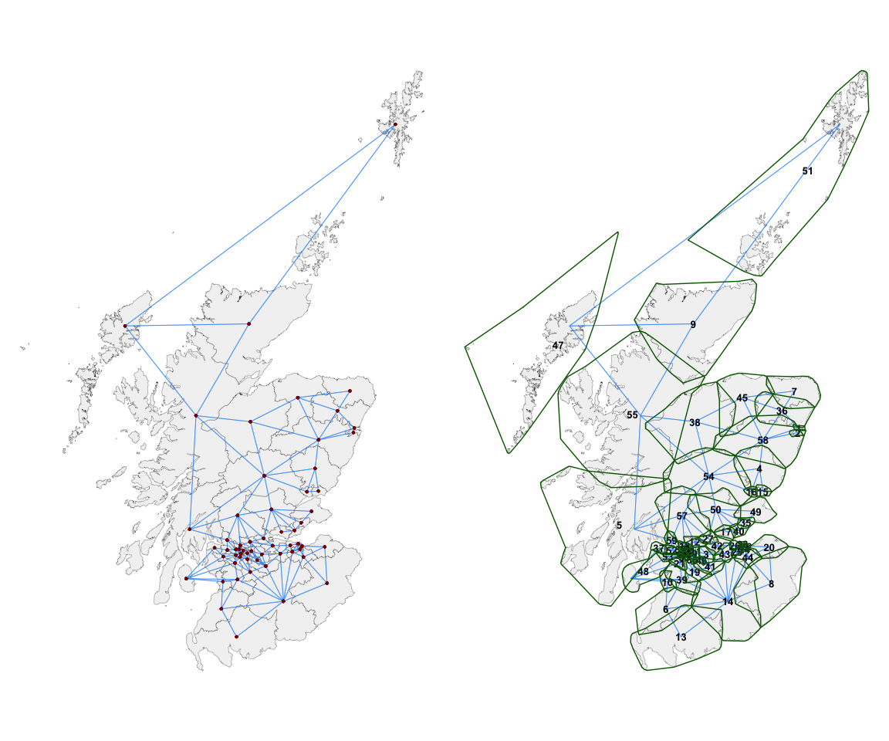
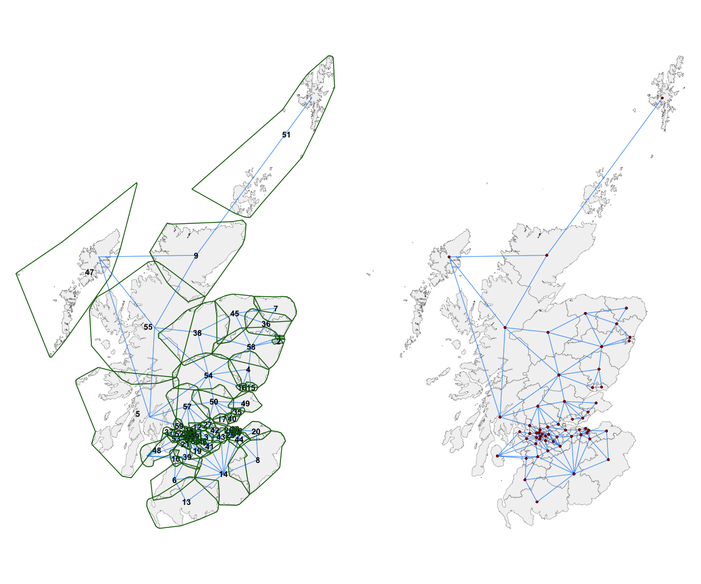
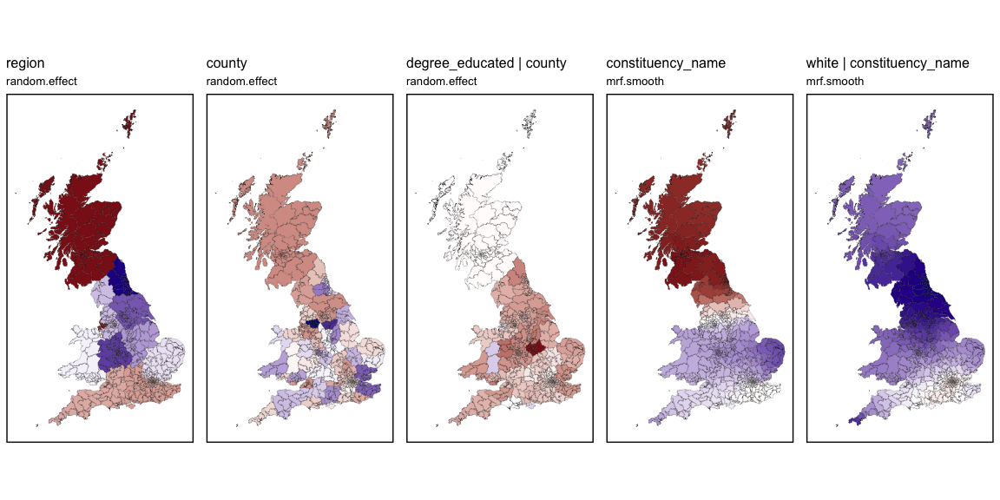

The goal of sfislands is to make it easier to deal with geographic datasets which contain islands. It does so using a tidy framework in the spirit of Josiah Parry’s sfdep package.
- These do not have to be islands by a traditional land and water geographic definition, but any situation where discontiguous geographical units are present.
Such a situation can lead to two issues.
Firstly, if unaddressed, the presence of such islands or exclaves can make certain types of contiguity-based modelling impossible.
Secondly, just because two areas are separated by, say, a body of water, this does not necessarily mean that they are to be considered independent of each other.
This package offers solutions to allow for the inclusion or exclusion of these units within an uncomplicated workflow.
A pre-print of a paper discussing the package is available here.
Installation
Install the released version from CRAN:
install.packages("sfislands")You can install the development version of sfislands from GitHub with:
# install.packages("devtools")
devtools::install_github("horankev/sfislands")Summary of features
The initial setting-up of neighbourhood structures can be frustrating for people who are eager to get started with fitting spatial models. This is especially so when the presence of discontiguities within a geographical dataset means that, even having set up a neighbours list, the model will still not run without further awkward data manipulations.
As an aid to setting up neighbourhood structures, particularly when islands are involved, the package has a function to quickly map any neighbourhood structure for visual inspection. This can also be used to examine the output of
sfdepneighbour functions. Such maps can be used to check if the structure makes sense, given the researcher’s knowledge about the geography of the study area.If some units have been assigned as neighbours inappropriately, or if we wish to add additional connections, there are functions to allow this to be done in a straightforward and openly reportable way.
Once an appropriate neighbourhood structure is in place, different types of statistical tests and models can be performed.
sfdepcontains functionality to perform such tests, and the output fromsfislandscan be used in its functions.The contiguity outputs from
sfislandscan be directly used to fit different types of (multilevel) (I)CAR models using, for example, themgcv,brms,stanorINLApackages.For
mgcvin particular, the predictions of such models can be quite tedious to extract and visualise.sfislandscan streamline this workflow from the human side. Furthermore, there is a function to draw maps of these predictions for quick inspection.
Functions overview
The following is a brief explanations of the functions contained in the sfislands package and a workflow within which they could be used.
The first group can be seen as pre-functions, designed to create a neighbourhood structure suitable for certain types of models.
Once a model has been fit (using mgcv in this case), the post-functions can be used to extract the predictions.
Step 1: Set up data (“pre-functions”)
| function: | purpose: |
|---|---|
| st_bridges() | Create a neighbours list, matrix, or sf dataframe containing a neighbours list or matrix as column “nb”, while accounting for islands. |
| st_quickmap_nb() | Check contiguities visually on map. |
| st_check_islands() | Check assignment of island contiguities in a dataframe. |
| st_force_join_nb() | Enforce changes to any connections. |
| st_force_cut_nb() | Enforce changes to any connections. |
Step 2: Create model
Use the output of st_bridges() as both the data and neighbourhood inputs for a model using, for example, mgcv, brms or inla.
Workflow
The dataset uk_elections, which is provided with the package, is used for the following demonstrations. It is an sf dataset with geometries for each of the 632 Westminster parliamentary constituencies of England, Scotland and Wales in the 2019 general election. For each constituency, it contains socio-economic data from the 2011 census. It also shows the Butler swing between the 2017 and 2019 elections, which is a measure of the change in voter allegiance in favour of the Conservative Party from the Labour Party.
Pre-functions: Creating desired adjacency structure
To demonstrate the st_bridges() function for preparing an adjacency matrix, we focus on Scotland. It is the nation with the highest number of islands. The function, with default arguments, returns a dataframe with an additional column named nb. This column is a named neighbourhood list of class nb. The default neighbourhood structure which it computes is:
for constituencies which are not islands, first-order queen contiguity. A constituency is considered to be a neighbour of all of those with which it shares at least a vortex.
for islands, contiguities are assigned to the two nearest constituencies to each island. This number can be altered using the
link_islands_kargument.
scotland_df <- uk_election |> filter(country == "Scotland")
nbsf <- st_bridges(df = scotland_df,
row_identifier = "constituency_name",
link_islands_k = 2)This new dataframe has the following form (with a column named nb containing a neighbours list):
head(nbsf)
#> Simple feature collection with 6 features and 10 fields
#> Geometry type: GEOMETRY
#> Dimension: XY
#> Bounding box: xmin: 92527.68 ymin: 571251.1 xmax: 397261.7 ymax: 812377.5
#> Projected CRS: OSGB36 / British National Grid
#> degree_educated health_not_good white con_swing population region
#> 1 0.2659346 -0.8699365 0.1441816 7.1285493 99654 Scotland
#> 2 1.6283752 -1.7731408 0.3038995 2.9732599 93197 Scotland
#> 3 -1.3538678 0.8155333 0.6963927 -0.2362672 85845 Scotland
#> 4 -0.6852759 -0.6765349 0.7250742 1.7350840 86004 Scotland
#> 5 0.2535023 -0.3624242 0.7174423 3.9062703 88166 Scotland
#> 6 -0.6898382 0.6590625 0.7272781 4.4404142 93308 Scotland
#> county constituency_name country nb
#> 1 Scotland Aberdeen North Scotland 2, 36, 58
#> 2 Scotland Aberdeen South Scotland 1, 58
#> 3 Scotland Airdrie and Shotts Scotland 11, 12, 41, 42, 43, 46
#> 4 Scotland Angus Scotland 15, 16, 54, 58
#> 5 Scotland Argyll and Bute Scotland 54, 55, 57, 59
#> 6 Scotland Ayr, Carrick and Cumnock Scotland 10, 13, 14, 39
#> geometry
#> 1 MULTIPOLYGON (((395379.7 80...
#> 2 POLYGON ((396214 805849.7, ...
#> 3 POLYGON ((290854.4 662154.9...
#> 4 POLYGON ((374164.5 762668.6...
#> 5 MULTIPOLYGON (((139257.4 64...
#> 6 MULTIPOLYGON (((246939 6250...We can inspect (and openly report) what additional contiguities have been added to the standard queen contiguity structure using the function st_check_islands().
st_check_islands(nbsf)
#> island_names island_num nb_num nb_names
#> 1 Na h-Eileanan An Iar 47 9 Caithness, Sutherland and Easter Ross
#> 2 Na h-Eileanan An Iar 47 51 Orkney and Shetland
#> 3 Na h-Eileanan An Iar 47 55 Ross, Skye and Lochaber
#> 4 Orkney and Shetland 51 9 Caithness, Sutherland and Easter Ross
#> 5 Orkney and Shetland 51 47 Na h-Eileanan An IarThe overall contiguity structure can be visualised using the function st_quickmap_nb(), whose output is shown below on the left.
ggarrange(
st_quickmap_nb(nbsf),
st_quickmap_nb(nbsf,
concavehull = TRUE,
nodes = "numeric",
numericsize = 3.5),
ncol = 2
)
However, it is often the case that each island unit (in this case, constituency) is in fact a multipolygon of islands. To make this clearer, the argument concavehull = TRUE can be chosen. These green boundaries (shown above on the right) around each constituency are for reference purpose only and do not influence the assignment of contiguities. They show which group of islands are considered as one constituency of islands. Furthermore, the argument nodes = "numeric" represents the centroids of each unit with its index number instead of a geometric point. This can be useful for editing the adjacencies, particularly if the researcher is not familiar with the names of the individual spatial units.
Editing contiguities
A researcher can now use domain knowledge or a particular hypothesis to edit these contiguities. For instance, we may not be happy with the connection between 47 (Na h-Eileanan An Iar) and 51 (Orkney and Shetland) and wish to remove it. We might instead feel that it is important for 47 and 5 to be considered neighbours. This can be easily achieved, as shown below, using the st_force_cut_nb() and st_force_join_nb() functions. The spatial units whose relationships we wish to change can be referenced by name or by index number.
nbsf <- st_bridges(df = uk_election |> filter(country == "Scotland"),
row_identifier = "constituency_name",
link_islands_k = 2) |>
st_force_cut_nb("Na h-Eileanan An Iar", "Orkney and Shetland") |>
st_force_join_nb(47, 5)The results of these changes as visualised in map form are shown below:
ggarrange(
st_quickmap_nb(nbsf,
concavehull = TRUE,
nodes = "numeric",
numericsize = 3.5),
st_quickmap_nb(nbsf),
ncol = 2
)
The above process can be iterated until we are happy that the structure conforms with our hypothesis of connectivity within the study area.
Modelling & post-functions
Having set up a neighbourhood structure and embedded it as a named list or matrix within the original sf dataset as a column named nb, the workflow to generate and visualise predictions from a model (in this case using mgcv) is very straightforward and consists of only 3-4 lines of code.
For example, we can use the mgcv package to generate quite a complicated model with various random intercepts and slopes at region and county level, and additionally, different Markov Random Field ICAR smooths at the constituency level. This is done very quickly by
- using
st_bridges()to prepare the data, - putting that inside the
mgcv::gam()formulation, and then - piping into the
st_augment()function.
This gives the following output, with all of the spatially varying predictions and their standard errors being added as extra columns before the final geometry column:
prep_data <- st_bridges(uk_election, "constituency_name") # decide upon the contiguities and add them to the df
model1 <- gam(con_swing ~
s(region, bs="re") + # region level random intercept
s(county, bs="re") + # county level random intercept
s(county, degree_educated, bs="re") + # county level random coefficient
s(constituency_name, bs='mrf',
xt=list(nb=prep_data$nb),k=10) + # ICAR constituency ICAR varying coefficients
s(constituency_name, by=white, bs='mrf',
xt=list(nb=prep_data$nb),k=10), # ICAR constituency ICAR varying coefficients
data=prep_data, method="REML") |> # pipe into function to get estimates
st_augment(prep_data)
head(model1)
#> Simple feature collection with 6 features and 20 fields
#> Geometry type: GEOMETRY
#> Dimension: XY
#> Bounding box: xmin: 264110.4 ymin: 148666.1 xmax: 488768.5 ymax: 812377.5
#> Projected CRS: OSGB36 / British National Grid
#> degree_educated health_not_good white con_swing population region
#> 1 -1.21794372 2.4694480 0.6393329 8.5917223 66133 Wales
#> 2 0.04609836 0.5666903 0.6561204 2.2040312 56415 Wales
#> 3 0.26593462 -0.8699365 0.1441816 7.1285493 99654 Scotland
#> 4 1.62837520 -1.7731408 0.3038995 2.9732599 93197 Scotland
#> 5 -1.35386780 0.8155333 0.6963927 -0.2362672 85845 Scotland
#> 6 -0.21109416 -1.3619136 -0.1675498 5.6993250 103922 South East
#> county constituency_name country nb
#> 1 West Glamorgan Aberavon Wales 80, 157, 371, 419, 451, 547
#> 2 Clwyd Aberconwy Wales 12, 141, 181
#> 3 Scotland Aberdeen North Scotland 4, 239, 595
#> 4 Scotland Aberdeen South Scotland 3, 595
#> 5 Scotland Airdrie and Shotts Scotland 142, 156, 309, 327, 332, 369
#> 6 Hampshire Aldershot England 70, 395, 517, 544
#> random.effect.region random.effect.county
#> 1 0.07736634 -0.0889861
#> 2 0.07736634 -0.1062061
#> 3 -1.69257542 -0.2986088
#> 4 -1.69257542 -0.2986088
#> 5 -1.69257542 -0.2986088
#> 6 -0.60617303 0.2472990
#> random.effect.degree_educated|county mrf.smooth.constituency_name
#> 1 -3.0504238 0.08001029
#> 2 -1.6077523 0.10070833
#> 3 -0.1165337 -0.30112582
#> 4 -0.1165337 -0.30111510
#> 5 -0.1165337 -0.34218741
#> 6 -2.0453936 0.01698329
#> mrf.smooth.white|constituency_name se.random.effect.region
#> 1 0.9971918 0.5881627
#> 2 1.2785329 0.5881627
#> 3 1.2800763 0.6985112
#> 4 1.2799615 0.6985112
#> 5 1.7736548 0.6985112
#> 6 -0.1353957 0.5113682
#> se.random.effect.county se.random.effect.degree_educated|county
#> 1 0.4400444 1.0549478
#> 2 0.4432314 1.7152822
#> 3 0.4500975 0.2933430
#> 4 0.4500975 0.2933430
#> 5 0.4500975 0.2933430
#> 6 0.3825063 0.6696364
#> se.mrf.smooth.constituency_name se.mrf.smooth.white|constituency_name
#> 1 0.3101948 0.7308175
#> 2 0.2039813 0.4377840
#> 3 0.5769227 1.0462122
#> 4 0.5769674 1.0463117
#> 5 0.4265664 0.7384490
#> 6 0.1762707 0.2423523
#> geometry
#> 1 POLYGON ((290786.3 202886.7...
#> 2 POLYGON ((283209.3 381440.5...
#> 3 MULTIPOLYGON (((395379.7 80...
#> 4 POLYGON ((396214 805849.7, ...
#> 5 POLYGON ((290854.4 662154.9...
#> 6 POLYGON ((485408.1 159918.6...The predictions can be quickly visualised using st_quickmap_preds(). As this function generates a list of ggplots, they can be conveniently visualised using the ggarrange() function from the ggpubr package.
plots <- st_quickmap_preds(model1)
ggarrange(plotlist = plots, legend = "none", nrow=1)
To emphasise the simplicity of the process, the a modified version of the following sequence of commands will generate a series of plots of all of the spatially varying elements of a model defined in mgcv:
prep_data <- st_bridges(...)
gam(..., data = prep_data) |>
st_augment() |>
st_quickmap_preds()It is also possible to conduct the same kind of augmenting and plotting of models generated using the lme4 and nlme packages.
Further information and vignettes containing more detailed examples are available here.